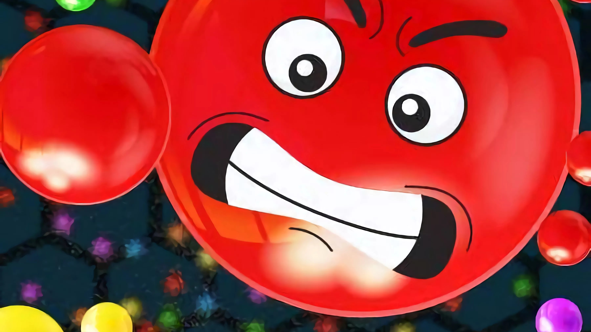

The Hard Truth About Your Cellcraft.io Runs
You keep dying in the first five minutes, don't you? You spawn, you eat a few pellets, and then some veteran turns you into a puddle of XP. I have over 2000 hours in Cellcraft.io. I’ve watched thousands of noobs make the exact same fatal errors. You think you just need faster reflexes. Wrong. You lack game sense. You treat the arena like a mindless feeding frenzy instead of a strategic battlefield. Stop blaming the lag. Stop blaming the matchmaking. The only reason you are stuck at the bottom of the leaderboard is because you refuse to master the core mechanics. Read every mistake below. Fix them, or quit the game.

| # | Mistake | Quick Fix |
|---|---|---|
| 1 | You Spam Your Portals | Stop using portals to run away |
| 2 | You Hoard Your 2x Speed | Treat 2x speed as your get-out-of-jail-free card |
| 3 | You Throw Minions Away | Deploy your minions in a wide perimeter around your main body |
| 4 | You Chase Giants | Only hunt targets that are at least twenty percent smaller than your current ... |
| 5 | You Waste Your Coins | Pick a single, aggressive playstyle and funnel all your coins into it |
You Spam Your Portals
You treat your portals like a cheap parlor trick instead of a tactical tool. The second a bigger blob gets close, you panic and drop a portal to teleport away. You do not check your destination. You just mash the button and pray you do not materialize inside a wall or directly into the jaws of another predator. You are wasting your most versatile utility tool on pure panic.
Teleportation in Cellcraft.io is not just an escape route; it is a crucial repositioning mechanic. When you teleport blindly, you completely lose your spatial awareness. You often end up in dead zones with no food, or worse, you teleport right back into the crosshairs of the player who was chasing you. You burn your cooldown, lose your momentum, and hand your hard-earned XP to the enemy on a silver platter.
Stop using portals to run away. Start using them to reposition. Before you activate a portal, scan the map for a safe drop zone near a dense cluster of food or a blind spot. Use the portal to flank a slower opponent or to instantly cross the map when the center gets too crowded. Make your teleportation calculated, tactical, and deadly.
You Hoard Your 2x Speed
You sit on your 2x speed powerup like a dragon guarding gold. You wait for the perfect moment to use it, which never comes. Or worse, you activate it when you are already safe, just to grab a few extra pellets. When a coordinated team finally corners you, you have no burst movement left to break the encirclement.
In Cellcraft.io, positioning is everything. If you do not have your 2x speed ready for emergencies, you are a sitting duck. Larger players will trap you against the map boundaries where your normal speed is useless. Without that sudden burst of acceleration, you cannot slip through the narrow gaps between enemies. You will be slowly squeezed out of existence while your ultimate escape tool sits unused in your inventory.
Treat 2x speed as your get-out-of-jail-free card. Keep it primed for the exact moment an enemy attempts to split or trap you. Alternatively, use it aggressively to dart into the center of the map, secure the highest-value food clusters, and retreat before anyone can react. Use the speed to dictate the pace of the engagement, not just to flee when it is too late.
You Throw Minions Away
You craft minions and immediately send them in a straight line at the biggest player on the server. You think more bodies equal more damage. You watch your bots get swallowed in seconds, then you complain that the powerup is weak. You are using your summons as a blunt instrument instead of a tactical asset, completely ignoring their defensive capabilities.
Minions in Cellcraft.io are meant to provide vision, zone control, and damage mitigation. When you feed them to the largest blob, you gain zero value. You lose the gold invested in them, and more importantly, you lose your peripheral shield. Without minions to absorb hits or block enemy paths, your main body is completely exposed to ambushes and flanking maneuvers from other players.
Deploy your minions in a wide perimeter around your main body. Use them to scout corners and check for ambushes before you move in. If you are being chased, send a few minions directly at the pursuer to force them to split or slow down. Save your bots for peeling enemies off you, or use them to finish off a weakened target when their defenses are down.
You Chase Giants
You see a massive player dominating the center of the map and you immediately chase them. You think if you just get one good hit, you can steal their massive XP bounty. You ignore the size difference and blindly pursue a target that is literally twice your mass, completely ignoring the medium-sized players eating right behind you.
Mass matters in Cellcraft.io. You cannot outplay a massive size disadvantage without a major powerup advantage. While you are hyper-focused on chasing a giant, your rear is completely exposed. Smaller, smarter players will easily catch up and consume you from behind. You end up giving away your accumulated XP to a nobody, while the giant you were chasing does not even notice you existed.
Only hunt targets that are at least twenty percent smaller than your current mass. If you want to fight a giant, you need to farm the edges of the map until you are significantly larger, or wait for them to use their portals and speed boosts. Patience wins games. Feed on the small fish, build an insurmountable lead, and then crush the giants when the math is in your favor.
You Waste Your Coins
You pick up a few coins and immediately dump them into the upgrade menu. You buy a little bit of speed, a little bit of minion health, and a minor portal reduction. You try to be a jack-of-all-trades, spreading your resources thin across every single available crafting option instead of committing to a specific build.
Cellcraft.io rewards specialization. A player with a maxed-out 2x speed and optimized portal cooldown will completely outmaneuver a player who has mediocre stats across the board. By spreading your coins too thin, you lack the burst power to escape, the damage to kill, and the utility to control the map. You become a generic blob with no defining strengths, making you an easy target for specialized veterans.
Pick a single, aggressive playstyle and funnel all your coins into it. If you want to be a hunter, max out your 2x speed and minion damage. If you want to be a survivor, focus purely on portal cooldowns and base health. Do not buy an upgrade until you have enough coins to reach a significant power spike. Specialization creates monsters; dilution creates victims.
The Bottom Line
Here is the brutal truth about Cellcraft.io. The arena does not care about your reflexes if your brain is turned off. The absolute biggest difference between the players dominating the leaderboard and the noobs respawning every thirty seconds is resource management and spatial awareness. Stop treating your powerups like toys and start treating them like weapons. Plan your portal drops. Save your speed for the kill or the escape. Specialize your coin upgrades. Master the mechanics, control the map, and stop feeding the veterans. Now get back in the arena and prove you actually learned something.